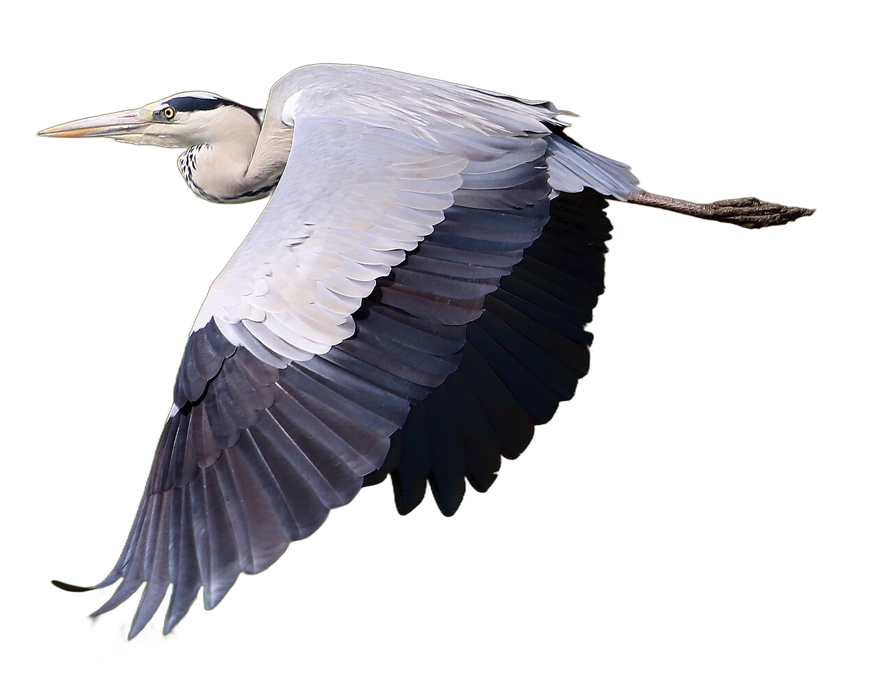

abby martin
github
linkedin
+++++++= ----
++*+****++*=:--==
-==+++++ ++++
==+=--=---=+*
----::::-----==
:::- :::::::::::----::-=+
::::::----:--== --
.. :::::::- -::::-:::---
..::.:::::: ---::::::-
::: ..::: ::: -::::::::-\
(: ::::/ :--: -:::::::-
:::::: :--- -:-::--=
|:::: --:: -::-==
--:: -:::/ -: \ \
:: ::: \
:::/
:::

..
...-.
.. ..-----..
.----::::
.-----:::::
-:::-:::::::
--... .----::::::::
-----------::::::::
:----------::::::
----------- :::::
---------
..--.-.
.-
things can appear as you arrive
. | \|/
o | \|/ |
.-.-. ( (@) ) '-|-' \|/ |
click the flower